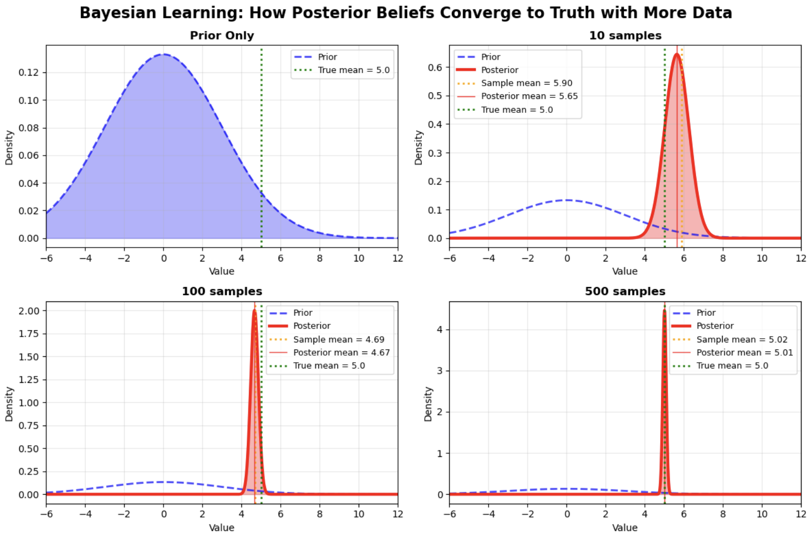
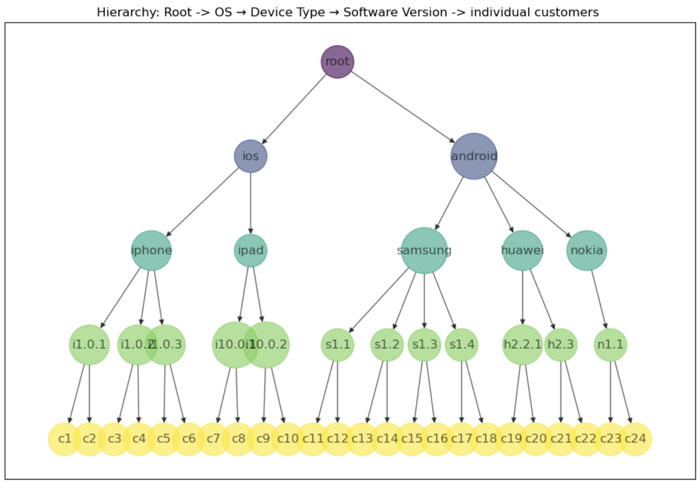
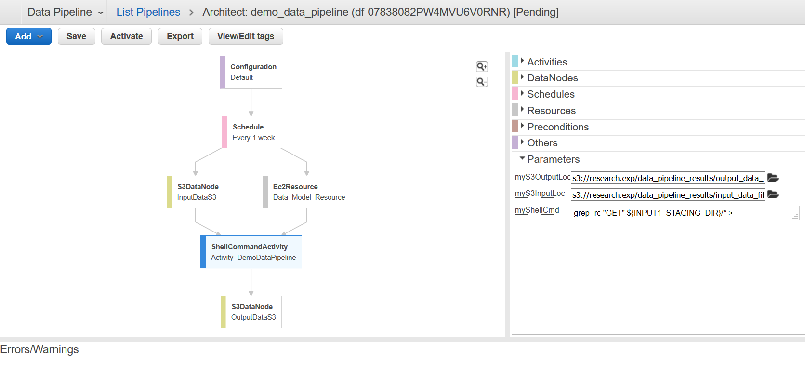
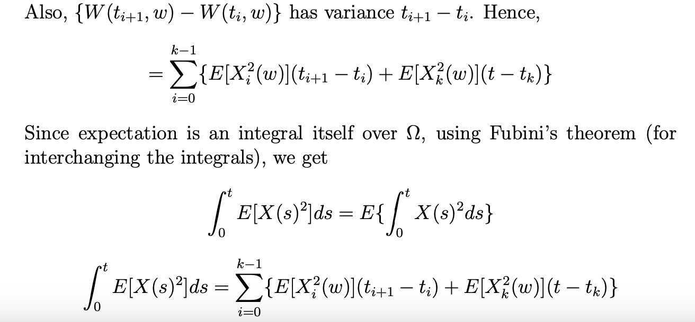

About Me
I lead a machine learning team at a financial institution and have been working in the space for the past 15 years. My expertise is in Agentic AI, Gen AI, NLP, Traditional Machine Learning algorithms and Bayesian methods. I have consistently delivered core machine learning services with strong business value from conception to implementation — production systems that stood the test of time in financial services, sports-betting, and e-commerce. With a passion for turning complex data into actionable insights, I strive to take data science and AI beyond the prototype stage, into production systems that deliver real, measurable value to the business.
Most of all, I love solving complex problems. My background is in Pure and Applied Mathematics with a smattering of financial mathematics. I did my undergrad and grad in Pure Math and gained some research experience at the Indian Statistical Institute (ISI), Kolkata. During this time I gravitated towards Applied Math and went on to a second Masters in Applied / Financial Math at the London School of Economics (LSE), where I was drawn to Stochastic Calculus and Quantitative Finance. At LSE, I was introduced to Machine Learning and Deep Learning and I really enjoyed the theoretical math behind the algorithms and applying it to real problems.
I love learning new things - that happens to be Agentic AI lately - and I hold a few patents. I have been enjoying using AI tools - Claude Code is my favourite so far. I like using em-dashes, even prior to ChatGPT so not every em-dash here is AI-generated :)
Resume
Technical Blog

Simulated Data Generation — Hierarchical Bayesian Modelling, Part 2
Read More →
Building the Hierarchical Model in Stan — Hierarchical Bayesian Modelling, Part 3
Read More →
Using AWS Data Pipelines for Scheduling Jobs
Read More →
Stochastic Calculus — Introduction & Applications
Read More →Miscellaneous
Beyond my professional work, I'm passionate about long walks, longer books - both fiction and non-fiction, hiking, watching cerebral shows and movies or anything sci-fi, going for concerts. If I'm not doing any of the above, then I'm overthinking :)